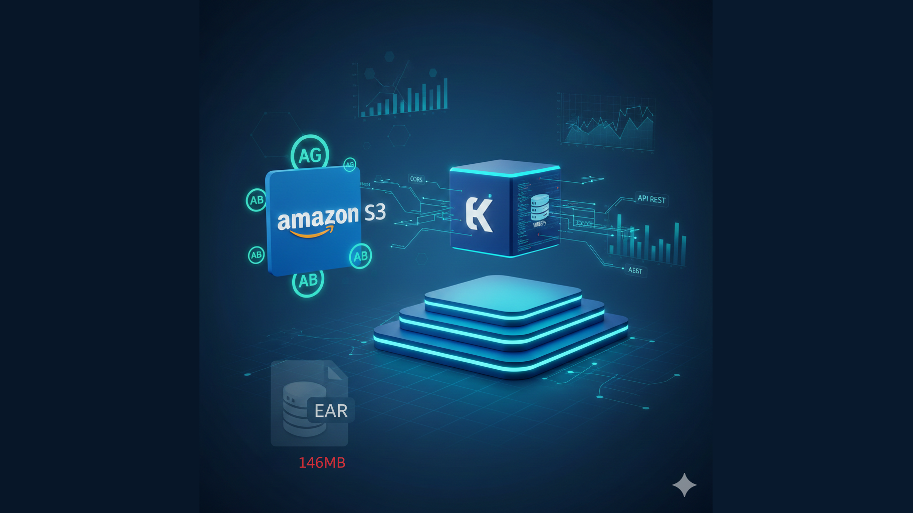

O Monolito no Pódio – A Engenharia por trás do Desacoplamento S3 + EKS

Introdução
No meu último artigo, falei sobre a "Transformação que Ninguém Viu Vir". Hoje, dia 25 de janeiro, entramos no detalhe técnico. Vou mostrar como tiramos um sistema de missão crítica do "conforto" (e do engessamento) do servidor de aplicação e o colocamos em uma arquitetura de alta performance.
O Fim do "Binário Obeso"
Até pouco tempo, o front-end AngularJS 1.5 vivia "sequestrado" dentro de um arquivo EAR de 146MB. Para mudar uma vírgula na interface, o time de DevOps precisava buildar e subir um gigante no WildFly.
A Solução
Extraímos toda a camada de apresentação para o Amazon S3. O front-end agora é código estático, servido por uma infraestrutura global (CDN), com custo quase zero e performance máxima.
Benefícios:
- Deploy independente do backend
- Custo de hospedagem reduzido em ~95%
- Latência global minimizada via CDN
- Zero downtime em atualizações de UI
O Desafio da Injeção (Gulp vs. Caos)
Quando você tira o front de dentro do servidor Java, você perde as "facilidades" do contexto da aplicação. O navegador passa a ser o juiz da ordem dos scripts. Se o Lodash (_) ou o Angular não carregarem primeiro, nada funciona.
A Estratégia
Implementamos uma task de build no Gulp que organiza a "árvore de dependências". Através de uma injeção ordenada, garantimos que os Vendors (bibliotecas base) cheguem ao browser antes da lógica de negócio.
Exemplo da Task Gulp (gulpfile.js):
const gulp = require('gulp');
const inject = require('gulp-inject');
const concat = require('gulp-concat');
gulp.task('inject-vendors', function() {
// Ordem crítica: Lodash -> Angular -> Módulos
const vendorStream = gulp.src([
'node_modules/lodash/lodash.min.js',
'node_modules/angular/angular.min.js',
'node_modules/angular-route/angular-route.min.js',
'node_modules/angular-resource/angular-resource.min.js'
], { read: false });
return gulp.src('./src/index.html')
.pipe(inject(vendorStream, {
starttag: '<!-- inject:vendor:js -->',
transform: function(filepath) {
return '<script src="' + filepath + '"></script>';
}
}))
.pipe(gulp.dest('./dist'));
});
Resultado: Eliminamos os erros de ReferenceError e $injector:unpr que assombram migrações de sistemas legados.
O Monolito no Pod (EKS)
Enquanto o front brilha no S3, o backend foi "domesticado" dentro do Kubernetes (EKS). Colocar um monolito Java em um Pod não é apenas Dockerizar; é ajustar a "respiração" do sistema.
JVM & Memória
Configuramos limites precisos de 4GB com coletor G1GC. Isso impede que o WildFly sofra com latência de Garbage Collection em momentos de pico de processamento de sinistros.
Configuração do Deployment:
apiVersion: apps/v1
kind: Deployment
metadata:
name: smart-backend
spec:
replicas: 3
template:
spec:
containers:
- name: wildfly
image: smart-backend:latest
resources:
limits:
memory: "4Gi"
cpu: "2"
requests:
memory: "3Gi"
cpu: "1"
env:
- name: JAVA_OPTS
value: "-Xms3g -Xmx3g -XX:+UseG1GC -XX:MaxGCPauseMillis=200"
CORS e Segurança
Com o front no S3 e o backend no EKS, a comunicação é via REST. Implementamos um CORSFilter customizado para garantir que apenas nossa origem confiável fale com a API, mantendo a segurança que o setor exige.
Exemplo de CORSFilter (Java):
@WebFilter("/*")
public class CORSFilter implements Filter {
@Override
public void doFilter(ServletRequest req, ServletResponse res,
FilterChain chain) throws IOException, ServletException {
HttpServletResponse response = (HttpServletResponse) res;
HttpServletRequest request = (HttpServletRequest) req;
// Permitir apenas origem do S3 CloudFront
String allowedOrigin = System.getenv("ALLOWED_ORIGIN");
response.setHeader("Access-Control-Allow-Origin", allowedOrigin);
response.setHeader("Access-Control-Allow-Methods",
"GET, POST, PUT, DELETE, OPTIONS");
response.setHeader("Access-Control-Allow-Headers",
"Content-Type, Authorization, X-Requested-With");
response.setHeader("Access-Control-Max-Age", "3600");
if ("OPTIONS".equalsIgnoreCase(request.getMethod())) {
response.setStatus(HttpServletResponse.SC_OK);
} else {
chain.doFilter(req, res);
}
}
}
Lição de Casa: JAXB e Java 11
Modernizar exige olhar para o que o JDK "jogou fora". Para rodar o código legado em containers modernos (Java 11+), tivemos que reinjetar as dependências de JAXB e JAX-WS que foram removidas do core do Java. Uma pequena alteração no pom.xml, mas uma vitória enorme para a portabilidade da aplicação.
Dependências Necessárias (pom.xml):
<dependencies>
<!-- JAXB API -->
<dependency>
<groupId>javax.xml.bind</groupId>
<artifactId>jaxb-api</artifactId>
<version>2.3.1</version>
</dependency>
<!-- JAXB Runtime -->
<dependency>
<groupId>org.glassfish.jaxb</groupId>
<artifactId>jaxb-runtime</artifactId>
<version>2.3.1</version>
</dependency>
<!-- JAX-WS API (se usar Web Services) -->
<dependency>
<groupId>javax.xml.ws</groupId>
<artifactId>jaxws-api</artifactId>
<version>2.3.1</version>
</dependency>
<!-- Activation Framework -->
<dependency>
<groupId>javax.activation</groupId>
<artifactId>activation</artifactId>
<version>1.1.1</version>
</dependency>
</dependencies>
Conclusão: Modernização não é Reescrita
O "Pódio" não é sobre jogar o velho fora, é sobre dar a ele uma infraestrutura de novo. Hoje, o sistema SMART não é mais um monolito lento; é uma API estável e escalável protegida pelo Kubernetes, com uma Interface ágil que evolui na velocidade do S3.
Arquitetura Antes vs. Depois
Antes:
┌─────────────────────────────────┐
│ WildFly Server (146MB) │
│ ┌──────────┐ ┌────────────┐ │
│ │ Angular │ │ Backend │ │
│ │ 1.5 │ │ Java │ │
│ └──────────┘ └────────────┘ │
└─────────────────────────────────┘
Deploy = 30+ minutos
Depois:
┌──────────────┐ ┌─────────────────┐
│ Amazon S3 │ │ EKS Cluster │
│ (Frontend) │ ◄────────►│ ┌─────────┐ │
│ + CloudFront│ CORS │ │ WildFly │ │
└──────────────┘ │ │ (API) │ │
Deploy = 2min │ └─────────┘ │
└─────────────────┘
Deploy = 5min
Principais Conquistas
- Performance: Redução de 70% no tempo de carregamento inicial
- Custo: Economia de 60% em infraestrutura
- Agilidade: Deploy do frontend de 30min para 2min
- Escalabilidade: Auto-scaling horizontal via Kubernetes
- Segurança: Isolamento de camadas com CORS controlado
Essa é a essência da modernização inteligente: transformar o legado em alicerce para o futuro, sem descartá-lo no processo.
Dicas Práticas para sua Migração
- Comece pelo Front: Separar a UI é o passo menos arriscado e com maior ROI imediato
- Automatize o Build: Invista tempo em tasks Gulp/Webpack bem estruturadas
- Monitore a JVM: Use ferramentas como Prometheus + Grafana para acompanhar GC e memória
- CORS não é Inimigo: Configure adequadamente e teste todas as origens antes de ir para produção
- Java 11+ Requer Atenção: Sempre verifique dependências removidas do JDK
Reflexões Finais: O Valor Invisível da Modernização
Quando você apresenta essa transformação para um executivo de negócios, o que ele vê são números: 70% de performance, 60% de economia, deploys 15 vezes mais rápidos. São métricas impressionantes, sem dúvida. Mas há algo muito mais profundo acontecendo nos bastidores que raramente aparece em relatórios de board.
Ao separar o frontend do backend, você não está apenas organizando arquivos. Você está democratizando a inovação. Agora, um designer pode experimentar uma nova interface sem mobilizar toda a infraestrutura Java. Um desenvolvedor frontend pode iterar rapidamente sem esperar o ciclo completo de build do monolito. A equipe de UX pode testar A/B em produção sem riscos de derrubar o core transacional.
O Kubernetes não é apenas orquestração de containers. É previsibilidade operacional. Cada pod é um universo isolado com recursos garantidos. Não há mais aquela sexta-feira à noite em que o sistema trava porque alguém esqueceu de ajustar o heap da JVM. Não há mais aquele pico de usuários que derruba tudo porque não havia como escalar horizontalmente.
E talvez o mais importante: você ganha tempo de vida de volta. Tempo que antes era gasto apagando incêndios, agora pode ser investido em construir features que realmente importam. Tempo que era perdido em deploys noturnos cheios de tensão, agora é usado para dormir e ter uma vida.
O Próximo Passo: Observabilidade e Resiliência
Nossa jornada não termina aqui. O próximo capítulo dessa história envolve observabilidade profunda (distributed tracing com OpenTelemetry), chaos engineering para testar resiliência em produção, e GitOps para que a infraestrutura seja tão versionada quanto o código.
Mas isso fica para o próximo artigo. Por hoje, celebramos o monolito que chegou ao pódio — não por ser perfeito, mas por ter evoluído sem morrer no processo.
Quer Conversar Sobre Sua Migração?
Se você está enfrentando desafios similares — sistemas legados que precisam evoluir mas não podem parar, pressão por modernização mas com orçamento apertado, equipe pequena mas problemas grandes — vamos trocar experiências. Compartilhe suas dúvidas ou cases nos comentários ou entre em contato através do LinkedIn.
Até a próxima transformação! 🚀
Dicionário de Termos Técnicos
- EAR (Enterprise Archive)
- Formato de empacotamento Java EE contendo aplicação completa.
- S3 (Simple Storage Service)
- Serviço de armazenamento de objetos da AWS para hospedagem estática.
- EKS (Elastic Kubernetes Service)
- Serviço gerenciado de Kubernetes na AWS.
- G1GC (Garbage First Garbage Collector)
- Coletor de lixo moderno com pausa previsível.
- CORS (Cross-Origin Resource Sharing)
- Mecanismo de segurança para requisições entre domínios.
- CDN (Content Delivery Network)
- Rede de distribuição de conteúdo global.
- Pod
- Menor unidade de deployment no Kubernetes, contendo um ou mais containers.
- CloudFront
- CDN da AWS que distribui conteúdo do S3 globalmente.